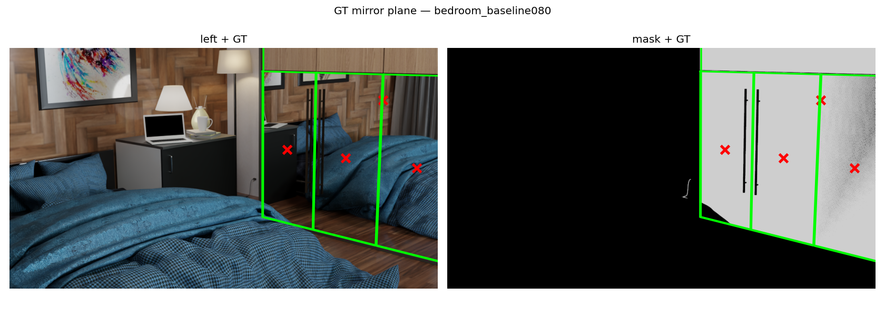
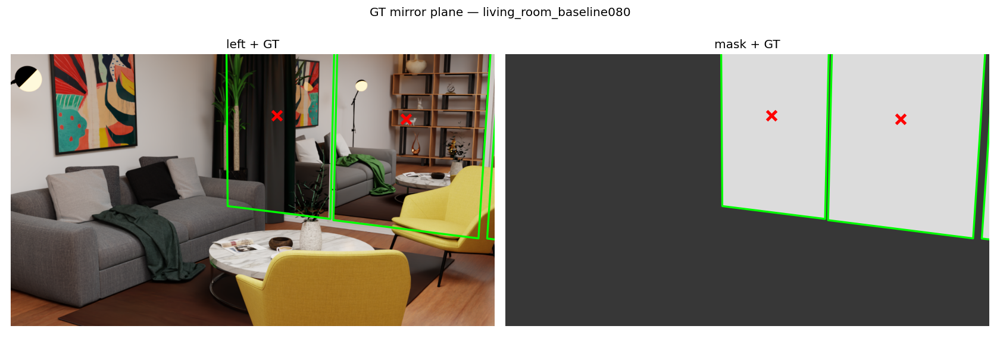

2026-06-05 세션 정리 · 성공·한계·실패를 모두 기록 · 가반 7팀(김정현)
| 작업 | 상태 | 핵심 결과 |
|---|---|---|
| 현재 상태 점검 | 완료 | 코드·실험이 메모리와 일치 확인 |
| GT 거울평면 export 도구 | 완료 | Blender 추출 + 좌표변환(축플립) 2단계, TDD |
| K(초점거리) 가정 오류 발견 | 중대 발견 | 가정 50mm ≠ 실제 25–60mm(장면별) |
| Mirror GT 전체 생성 | 완료 | 16 scene / 37 거울, ext 일치 |
| 검출 LOSO / view04 | 완료 | LOSO AUC 0.911 / view04 0.947 |
| bedroom 마스크·GT 수정 | 완료 | 옷장 미러도어로 교정(3.6%→31.7%) |
| living_room 마스크·GT 수정 | 완료 | 거울 발견(MirrorL/M/R) + texture-mirror 가림 우회 |
| terrazzo / minigym 마스크 | 한계 | 거울이 벽 뒤/edge-on — 카메라 시야에 안 보임 |
| modern_living_room 마스크 | 불가 | 거울이 화면 밖(카메라 이동 필요) |
| view04 GT 생성 | 부분 | 카메라/파이프라인은 OK, 거울이 큐브라 평면 GT 불안정 |
| 스크립트 일반화 | 완료 | prepare_meta 거울/카메라 + scene 오버라이드 |
| 산출물(보고서·노트북·Colab) | 완료 | report/, .ipynb, colab/ |
정공법(반사 대칭으로 거울면을 찾는 방법) 평가에 필요한 정답 거울 평면을 Blender 원본에서 추출하는 도구. brainstorming → spec → plan → subagent-driven 구현(5 Task, 각 단계 spec/품질 리뷰 통과)으로 만들었다.
MakeStereoDataset/scripts/export_mirror_gt.py — (Blender) 거울 메쉬 정점 → world 최소제곱 평면 + 실제 카메라 intrinsics 추출.FoundationStereo/scripts/make_mirror_gt.py — world→left-camera OpenCV 변환(축 플립 F=diag(1,−1,−1)) → gt.json + 검증 overlay.png. 순수 함수는 test_make_mirror_gt.py로 TDD(6 테스트).설계·계획 문서: docs/superpowers/specs/2026-06-05-gt-mirror-plane-export-design.md, docs/superpowers/plans/2026-06-05-gt-mirror-plane-export.md.
GT overlay가 마스크와 안 맞아 디버깅한 결과, 데이터셋이 카메라 초점거리를 lens=50mm로 가정했으나 Blender 실제 값이 장면마다 다름을 발견:
| 실제 lens | scene |
|---|---|
| 25–26mm | green_house(25), minigym(25.7), cozy_living_room/livingroom(26) |
| 28–30mm | modern_living_room(28), computer_room/gym/loft/scandinavian(30) |
| 35mm | sunlight |
| 50mm | archiviz, flat-archiviz, terrazzo, bedroom, blue_bathroom |
| 60mm | minimal_interior |
points.npy depth = fx·baseline/disp 이므로 절대 깊이가 (50/실제)배 어긋난다(예: computer_room ×1.667). 단 disparity 기반 결론(검출·AHCF AUC)과 GT 기하(절대 미터)는 K와 무관하므로 영향 없음. 정공법의 절대 거리 평가 전에는 장면별 실제 lens로 K/points 재생성이 필요하다. GT 추출 도구가 실제 intrinsics를 뽑아 gt.json.true_K·overlay에 사용한다.make_mirror_gt.py --all로 16 scene / 37 거울 GT 생성. 모든 scene에서 Blender 카메라와 데이터셋 카메라 일치(ext_diff≈0). 멀티거울: bedroom×4→(옷장)×5, livingroom×6, loft×7, minigym×3, modern×2, sunlight×2, archiviz/flat-archiviz×2, living_room×3.
품질 플래그(평가 시 제외 권장): blue_bathroom/Azeen Rectangle Wood(프레임, planRMS 0.011), loft/Cube.019(비평면 0.055).
일부 scene의 거울 마스크가 비거나 이상해 원인을 규명했다. render_mask 자체는 정상(computer_room 재렌더=기존 32.8% 일치)임을 대조로 확인.
실제로는 오른쪽에 큰 옷장 미러도어가 보이는데, find_mirrors가 이름("Mirror1~4") 우선이라 작은 엉뚱한 객체를 골라 마스크가 3.6%뿐이었다. 진짜 거울 Wardrobe_04_001(.001~.004)로 교정 → 마스크 31.7%, GT도 재생성(평면은 동일 perp 3.64, 범위가 정확해짐).

중앙에 거울이 보임(MirrorL/M/R). 빈 마스크 원인 둘: ① blend 폴더명 불일치(livingRoom_contemporary≠living_room)로 자동 스킵, ② texture-mirror 방식(거울 앞 유리/BG 평면)이 정상 render_mask에서 거울을 완전히 가림(정상 0%, 가림 제거 시 32.9%). 가림 제거 마스크 + GT 생성.

대상 거울 객체가 보이는 벽 뒤(가림 제거 시 ~52% 차지하나 정상 렌더 0%)거나 edge-on이라 CM 카메라 시야에 거울 표면이 보이지 않는다. 마스크 재렌더만으로 해결 불가하며, 거울이 보이도록 카메라를 옮겨 left/right/mask를 전부 재렌더해야 한다(MakeStereoDataset 변경).
거울(MirrorL/R)이 화면 밖(가림 제거해도 0.2%). 빈 마스크가 기하적으로 정답 — 카메라 이동 없이는 거울이 안 보인다.
요청대로 minigym.blend + view04 카메라(prepare_meta)로 GT 생성 경로를 만들었다. 카메라 처리(뷰 시점)·파이프라인은 정상 동작(cam_diff=1.41=뷰 시점차 정상). 그러나 minigym의 거울이 평면이 아니라 큐브(Cube.001~003)라 평면 GT의 planarity_rms가 1.0m로 신뢰 불가(메모리의 "minigym Cube.xxx" 문제). 큐브의 거울 면만 골라 평면을 잡는 별도 처리가 필요 — 미해결로 남김.
make_mirror_gt.py를 view·예외 scene까지 다루도록 일반화:
prepare_meta.mirror_objects(데이터셋이 실제 렌더에 쓴 거울) > find_mirrors 자동. → GT와 마스크의 거울을 일치.prepare_meta.left_camera_to_world → baseline·view 시점 모두 정확. blend 기본 CM과의 차이는 정보용(blend_vs_dataset_cam_diff).livingRoom_contemporary/living_room.blend, minigym_view04→minigym.blend.report/index.html (+ index.md) — 기술 결과(검출·AHCF·평면·GT).report/worklog.html (+ worklog.md) — 본 문서.report/figures/.mirror_pipeline_demo.ipynb (left/right/mirror_mask로 검출·AHCF·평면 재현).colab/mirror_pipeline_colab.ipynb + colab_bundle.zip + colab_model_vitl.zip(ViT-L 슬림 1.4GB).experiments/minigym_view04/report.html.scripts/ · 실험 experiments/<scene>/